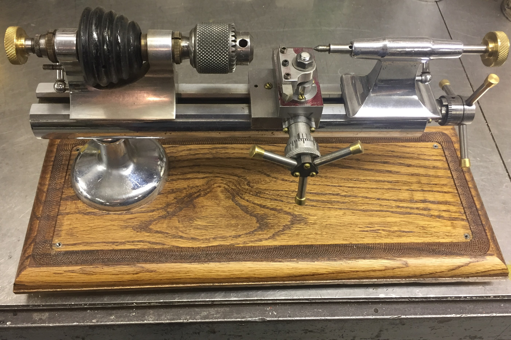
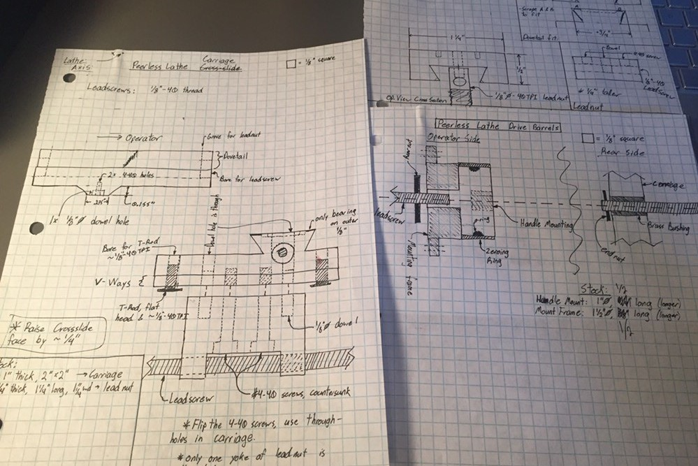
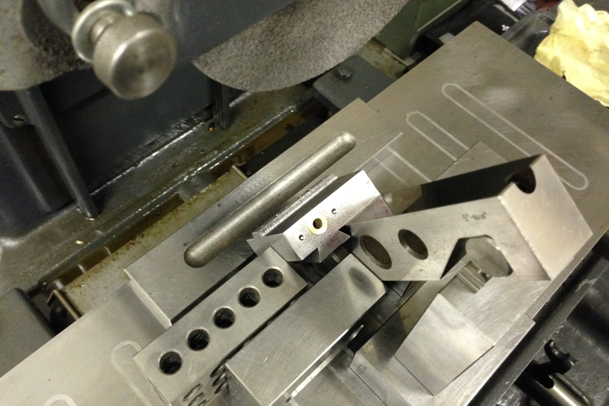
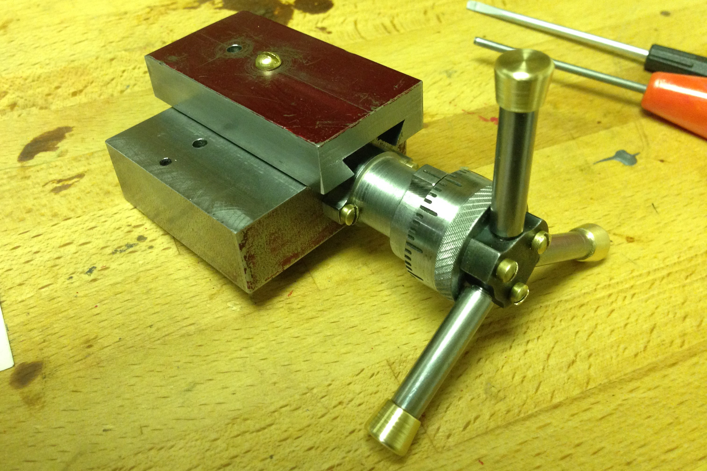

Peerless Lathe Rebuild
Winter 2016-2017
I rebuild and improve an old watchmaking lathe.
Additional Progress Pictures (imgur)

I aquired a tiny old watchmaking lathe, but it was missing most of it's parts, and others were pretty beat up, like the drawbar. I decided it would be a good project to turn it into a useful lathe. I made some drawings while I was at school and then started by milling out the bottom of the lathe bed to accept a leadscrew. I made a carriage that matched the pattern of the ways on the lathe bed and had a dovetail for the crossslide. The cross-slide then had a simple fixed tool post that could hold 1/4" tool steel blanks. I made barrels with graduations and adjustable dials and handles for turning the leadscrews. The leadscrews were just normal 1/4-20 LH threaded rod, so not precision ground or anything, but they worked fine for me. I made nicer knobs to go on the end of the tailstock and the drawbar, and made a nice wooden base for it.

The original hand-drawings. Has nice artifacts of my poor young design.

Some fancy surface grinding to get the ways just right on the carriage.

The mostly finished carriage and cross-slide, with barrel, handles, and adjustable dials. The dial has an O-ring inside it that provides friction to hold it in place.